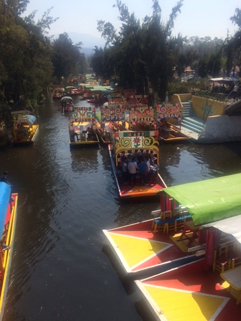

A Day Trip to Xochimilco
Posted 02/25/18
Why should you make a day trip to Xochimilco?
You've come to Mexico City for new experiences right? I can't think of a better place to see, hear, and eat new things. There is an island of weird hanging dolls to float by, mariachi bands will jump aboard to sing to you, snacks... drinks..., and... well hey maybe my photos will be better at selling the idea to you than I am. You must be reading this because you're interested. Go with your gut and make the trip.
How can I get Xochimilco?
Option 1: Public Transit
The local transporation in Mexico City is super cheap and not that difficult to navigate. I think the comparsion is about 25 cents a metro ride (in USD). If you're looking to save some money... this is the way to go. You should be able to take a combination of metro/bus from the CDMX area to Xochimilco. Check to see if your phone plan includes Canada and Mexico prior to your trip. Routing via your cellphone app makes using public transit much easier. If not, print out directions ahead of time. Or opt for option two.
Option 2: Uber
I opted to take an Uber to the area with my friends, during my trip to Xochimilco. We were heading from the Historic Distric. We took an Uber ride first to Frida Kahlo museum and then another Uber from there to Xochimilco. You can't beat the price of public transit, however, we opted for the Uber to save some commute time. Compared to the prices back in the States, the cost was not too bad.
How much should a boat cost me?
Okay... so we paid 600 pesos, for three people, our own boat, for about 2 hours. I like to think it was a good deal, but who knows really. I'm not one to haggle well or at all... Plus it was only like $33 USD, so like $11 per person for the experience. Not bad to me. I read on some other blog before we went that you should be able to get a boat around 450 pesos. Anyways, that should give you a rough estimate. When you arrive... they will come up to you and ask if you want a boat tour and will give you their starting price and length.
And then what?
Enjoy your boat ride! It is relaxing.
Pay for a mariachi band to jump aborad.
Buy some snacks! I personally got chips with hot sauce and lime (my fav)
Grab a beer.
See the weird island of hanging dolls
Be confused when people keep jumping from boat to boat